When we went to Brussels, we had little idea about what to expect. We knew it was a politically minded city, and that there were French and Dutch speaking people, in addition to some English speakers. We also knew Belgium had some of the best beer, chocolate, waffles and mussels in the world. We decided to focus primarily on drinking and food. On the train from Amsterdam to Brussels, which is the only city in Belgium we went to, we met an Australian music teacher named Julia. She was traveling around Europe for a long time, only done with one out of three months. We decided to meet up the next day and tour Brussels together. She was a ton of fun to hang out with, especially in the musical instruments museum, but eventually everyone got worn out during the second day in Brussels and we parted ways. She was smart enough to stay at a hostel rather than a hotel. Much cheaper and plenty of young people from around the world to chat with. We spent a lot of time chatting about the smurfs, and how animal noises are written in different languages. One thing we learned about Brussels. Outside of the tourist spots, they primarily speak French. Signs are translated into Dutch, and infrequently into English.
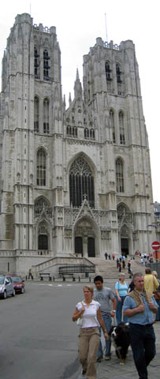
A front view of an impressive church in Brussels. They're always camera-bait.
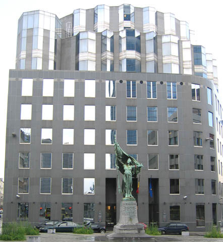
Just a cool building we passed on the way to finding our hotel in the European Quarters of Brussels.
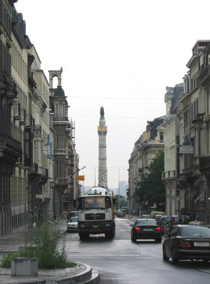
A scenic view of a random pillar in Brussels.
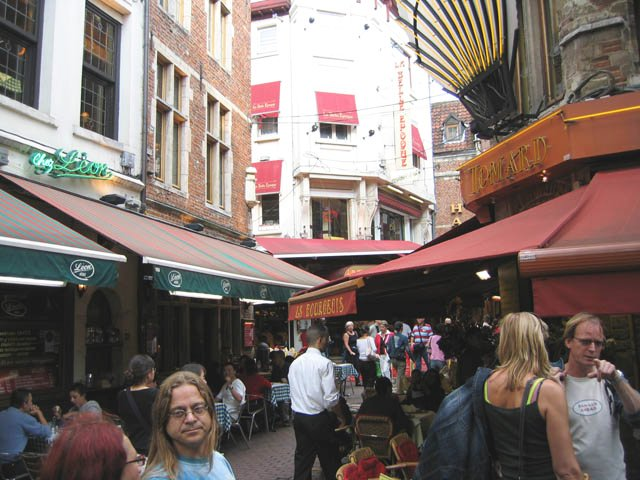
The restaurants in Brussels are worth mentioning. It's similar to the experience in Little Italy, except much more fierce. People who each speak five different languages fluently stand in front of their restaurants, trying to drag you in. The main problem is, they all charge the same prices, and they all serve the same food. What they advertise, you can easily get in the next restaurant. The main difference is with the service. While the guy who drags you in speaks English, often your waiter doesn't speak much English at all. You often don't get what you ordered, and you often have to wait a long time to get your food. They don't bring you the dessert you paid for unless you ask for it, and they don't bring you the bill until you flag them down. On the other hand, the food was all in all very good--especially the mussels.
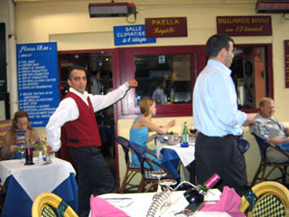
The two people here... the guy in white on the right and the guy posing in the red vest on the left... were very entertaining. When the guy in red approached Miller and I, we listened to his spiel about his food, then the much more outspoken guy in white approached and tried to drag us away. I asked the two if they could fight over us. Immediately, the guy in white puts the guy in red in a headlock and knees him in the chest. Just fooling around, but we were sold, and that was our first dinner in Brussels.
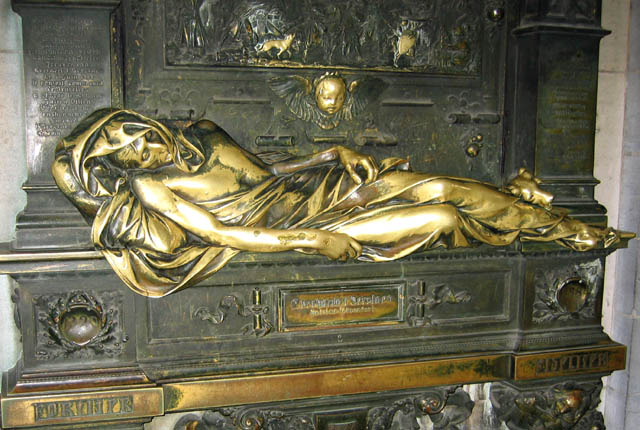
This statue was on one of the walls at the "Grand Place" in Brussels. A lot of people surrounded this statue, touching it. Miller and I still have no idea what it is.
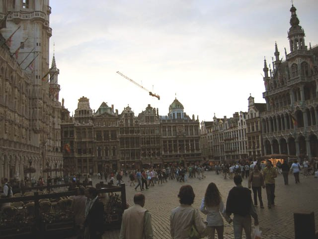
Here's a view of the Grand Place that hints at what it is. It's a large square surrounded by painstakingly detailed sculpted buildings, including an impressive clock tower above the town hall building. A picture wouldn't do the Grand Place justice. It was jaw-dropping.
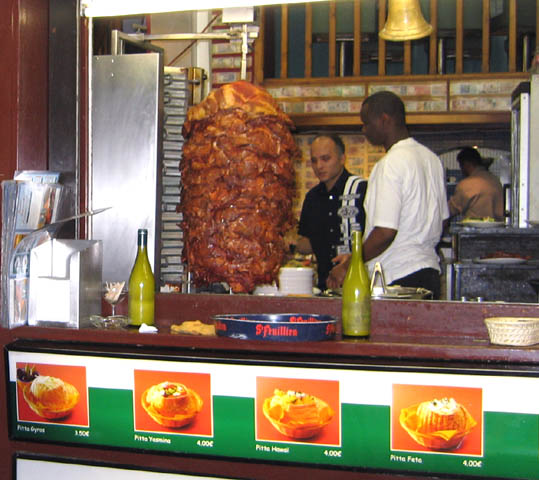
This was just a really appetizing little shop where you can buy meat... maybe on a sandwich or something. I couldn't stop staring at the meat. Come to me. Just one bite.
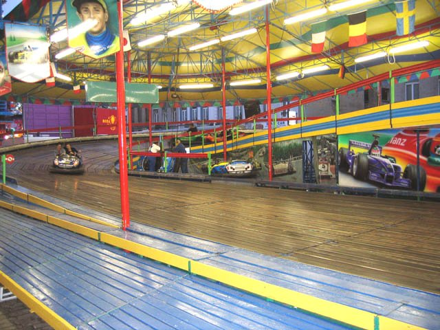
So Miller and I wandered. I was insistent on exploring, so we randomly found some sort of festival in Brussels. This was one of the rides, obviously, which looked pretty fun. We were apparently too lazy to do the rides, and the lines were lengthy, but the festival itself, although fairly narrow, stretched on for at least a mile. Some of the rides were outright crazy. We definitely heard a good share of American music throughout the festival. They really do like it all throughout Brussels and the Netherlands.
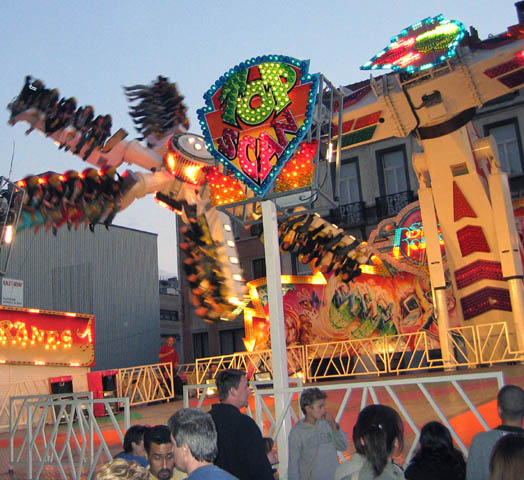
This was one of the crazy rides in the festival. Picture sitting on the star as the star is being flung around, and meanwhile, your row of seats is spinning every which way. It looked crazy to me anyway.
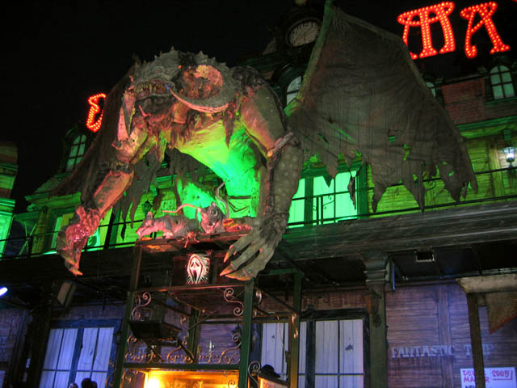
Here was a bad-ass looking haunted house. This demon in the picture looked dangerous, and was actually moving and sneering in disgust. On the haunted house on the other side was a sign that said "New demons imported from America!". Apparently the US makes good demons.
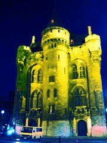
So at the end of our meandering, we found this castle called "Port de Haal". I don't know what's in it, but it was certainly closed when we went.
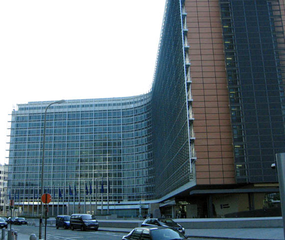
This is the big European Commission building. It looked pretty impressive the first time we saw it as we searched for our hotel at night. We were right around the corner. Just a note, that this is not the touristy part of Brussels, so if you go for a hotel rather than a hostel, stay somewhere closer to Grand Place.
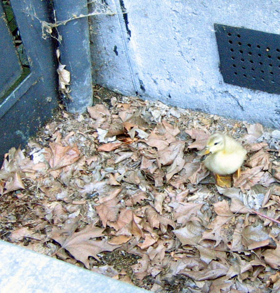
One of the places we stopped at was the Royal Palace, where we were supposed to meet up with Julia. The palace was surrounded by an iron fence, and behind that fence, the area surrounding the palace was sectioned off. Here's a cute little duckling that was in the section adjacent to his mother. Apparently he slipped through the little opening on the left, and Miller and I couldn't do much to open it further, so we had to let the little duckling cheep away in distress. We hoped someone would help the duckling later, but we didn't want to risk getting caught scaling the fence. Pictures of the inside of the Royal Palace comes later.
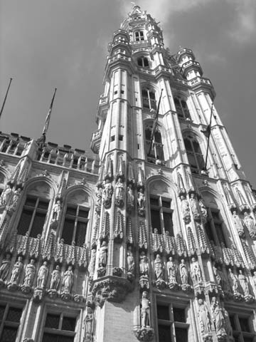
This is the town hall building in the Grand Place. The architecture was impressive enough for me to try the black and white photo effect.
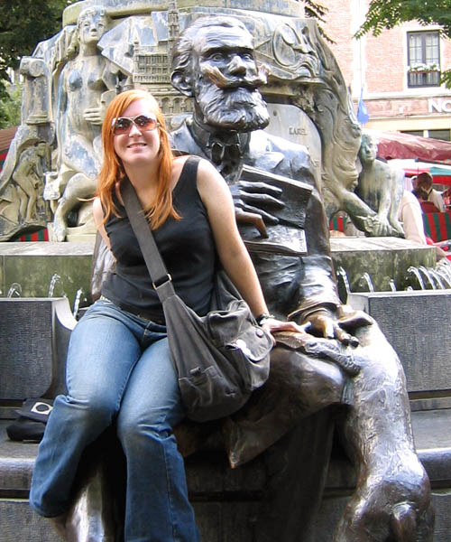
Here's Julia, the Aussie, sitting on the lap of some creepy statue.
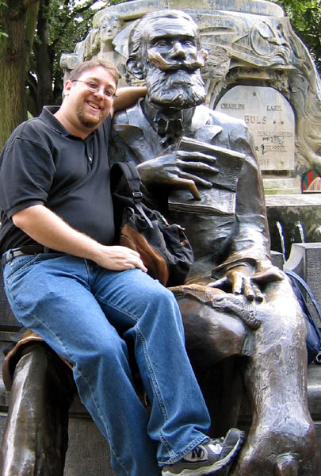
And here's Miller, matching the statue's creepiness.
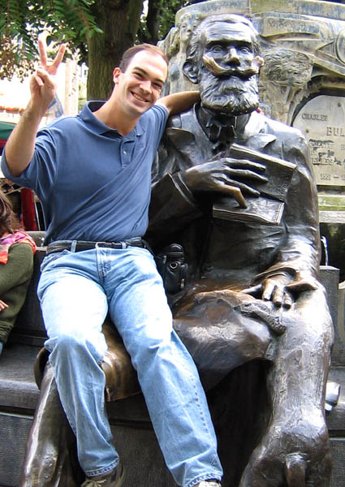
Yeah, I look creepy sitting on the statue's lap too. Peace!
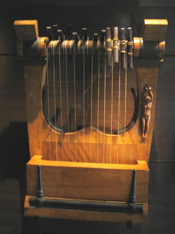
First exhibit I deemed picture-worthy in the musical instruments museum.
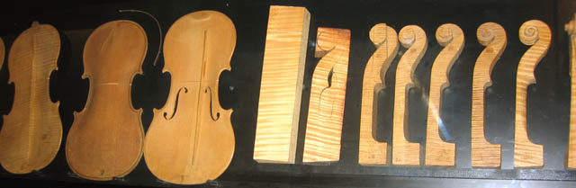
A small exhibit showing the construction of a violin. After this, I learned that we weren't allowed to take pictures in this museum, so there are no more.
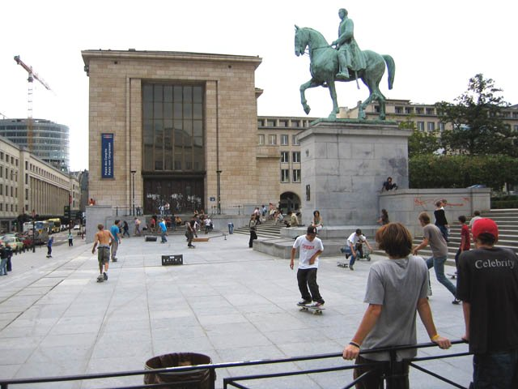
This was between the Royal Palace and the Grand Place. Skateboarders galore.
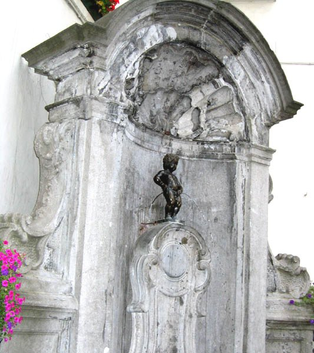
The infamous "Pissing Boy" that is marked down as a must see in the Brussels tourism guidebook. It's not even the actual statue. It's a replica, that probably has a smoother stream or something. The original statue is locked away safely.
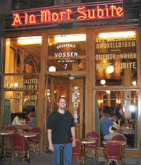
The bar that translates its name as "To the Sudden Death". They make their own beer, and we were pining for local beers rather than going with the many name brands. We found it, and the beer wasn't necessarily that strong. It was, however, very sour. Rather, citric, like a lemon. Still very good though.
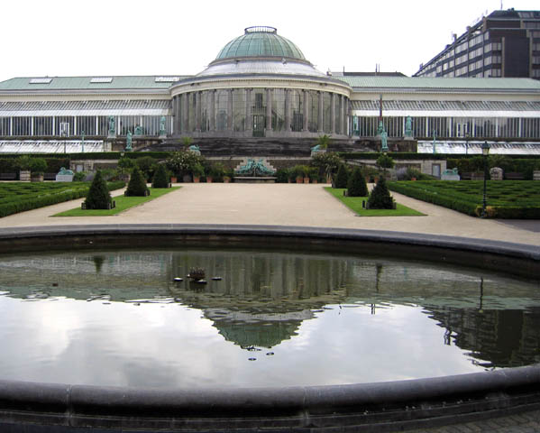
This was a scenic view in a botanical garden in Brussels. I stood on a bench to get this angle. I hope you appreciate it.
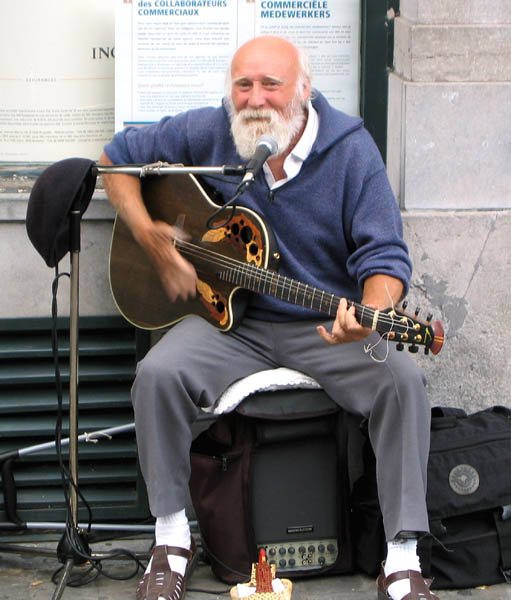
This is not only a great photo, but this is also a great man. What an inspiration. At first glance, he looks like an elderly bum. But then you hear him play the guitar. He can keep up with Eric Clapton, Santana, and even Slash. More importantly, he was a happy dude, and he certainly drew a huge crowd and huge applause. It was refreshing to see someone live out the twilight of their years making people happy.
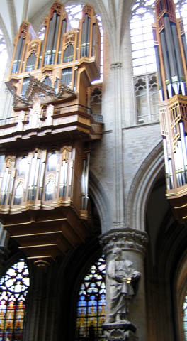
So we went into that church finally. I looked up and saw an impressive pipe organ, which you can't see that well here.
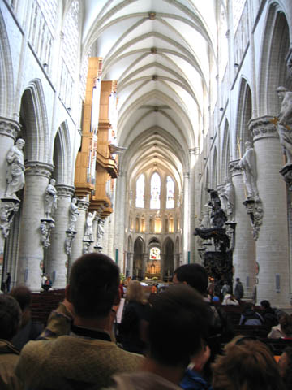
It's impossible to photographically capture the awe-factor big churches can have on you, but you may have seen it before in another big church. The old ones are mostly elaborate and titanic.
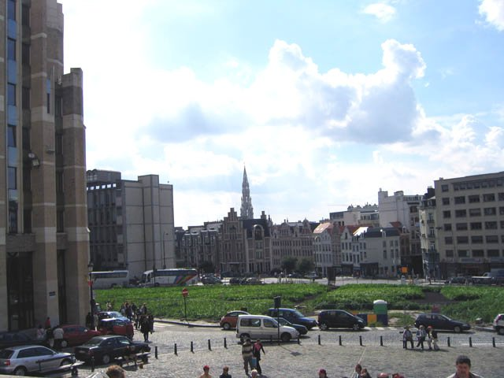
A view of Brussels from near the skateboarding area. You can see the tower above the town hall in the distance.
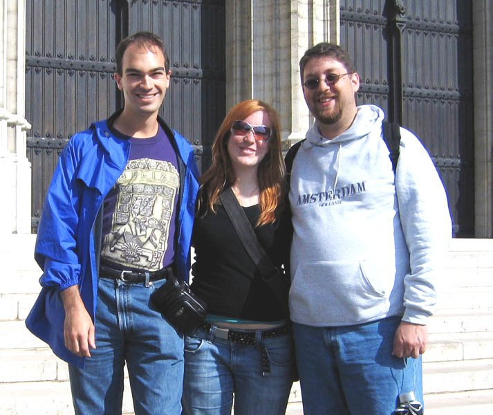
Group photo strikes again. I got pretty decent at using my camera's self-timer. Note the wind is not kind to people with thinning hair. Miller and I agree that Julia has cool sunglasses.
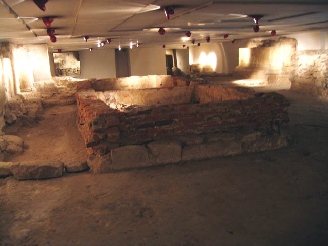
Here's the catacombs under the church. We went back to see it and it really wasn't worth it.
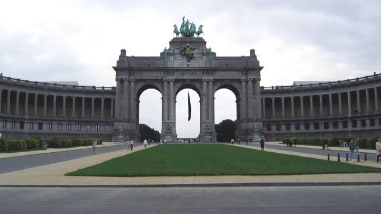
After we walked far eastward past the European Quarters, we saw this which looked impressive.
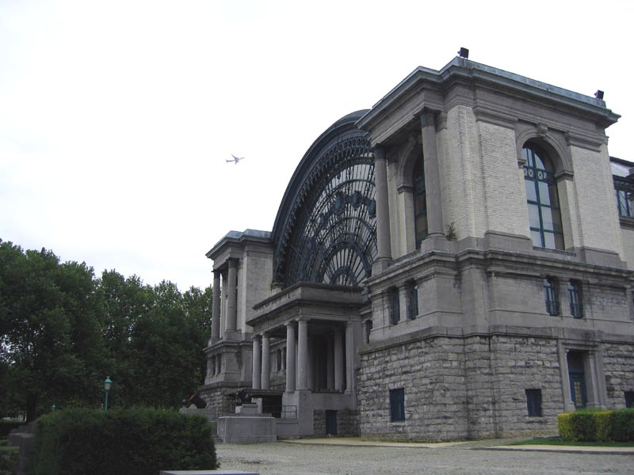
This building looked intriguing as well, and I like the fact that I captured the airplane flying overhead.
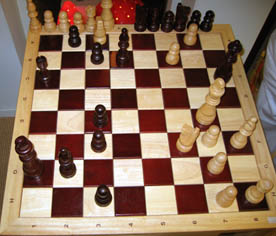
Miller and I raid a toy store, and I manage to win a chess match. He made a silly mistake. I normally am the one to make the silly mistakes, so I took a picture of my victory.
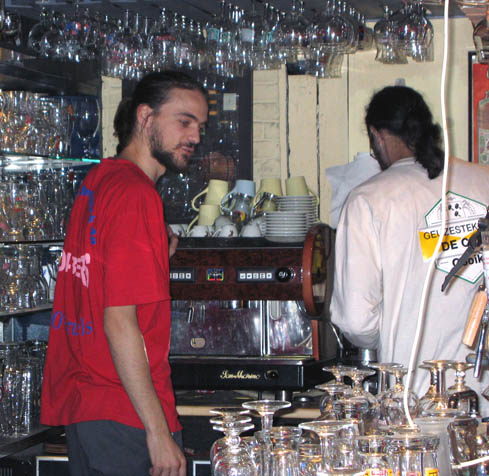
This guy is a total dick, but the bar, the Delirium Cafe, rocks. They advertise 2000 beers and probably have at least three quarters of them in stock. They brew their own beer too, which is heavenly, but I also got to try a Tazmanian beer for fun. The first night we went, they had live entertainment which was awesome. Mainly one burly guitarist that stole the show, but the others are that guitarist's buddies, so we like them too.
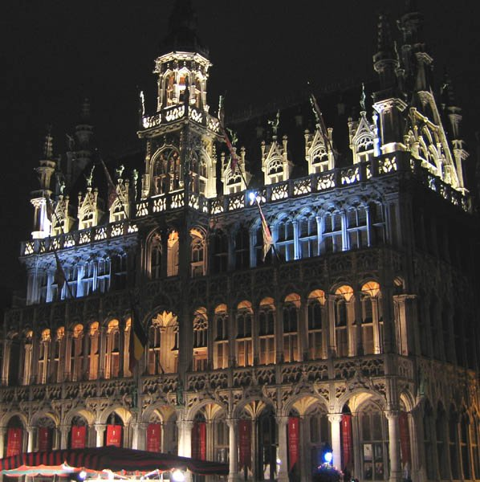
Here's a building at the Grand Place, lit up at night. This goes down as one of my great photos.
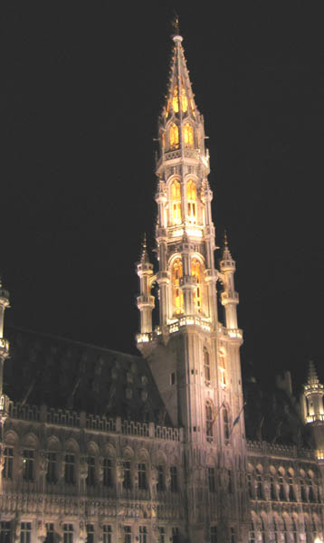
Here's the town hall tower lit up at night. Almost looks like a torch.
Back